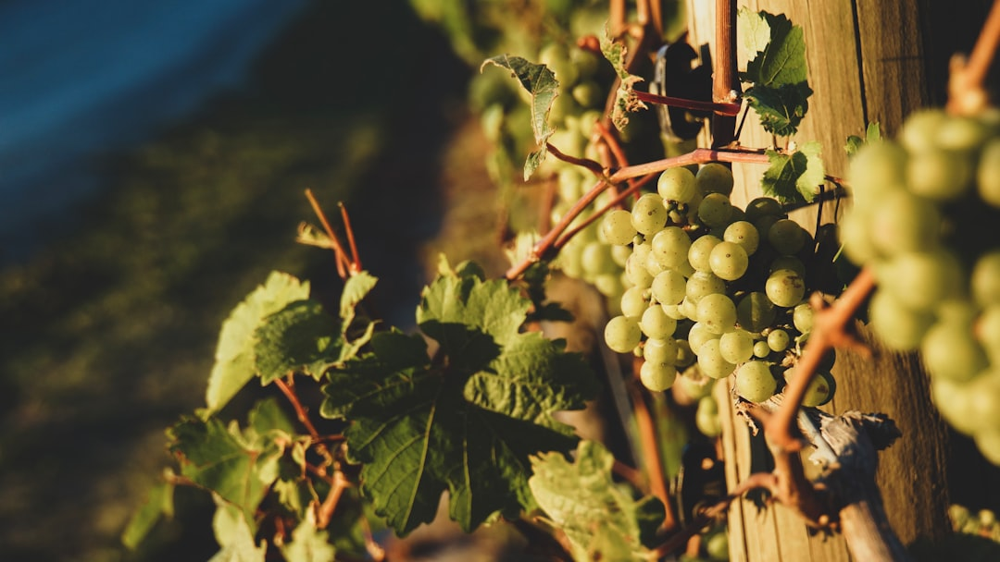
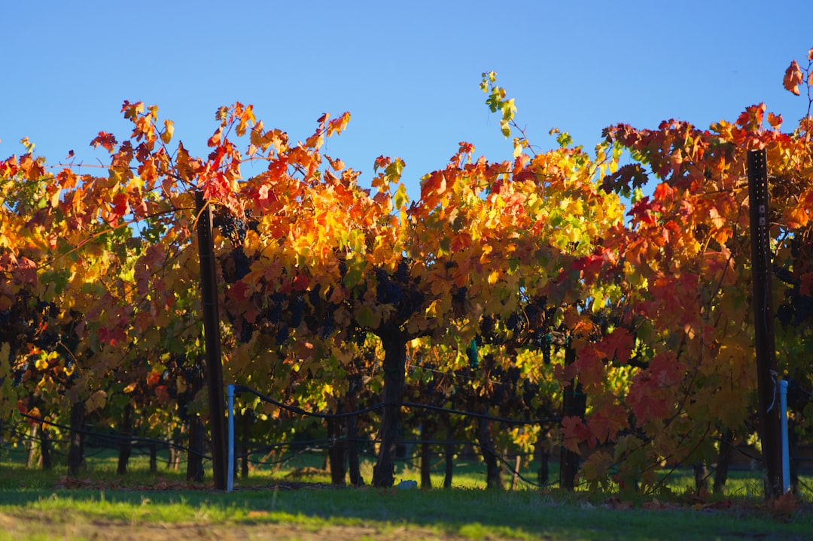
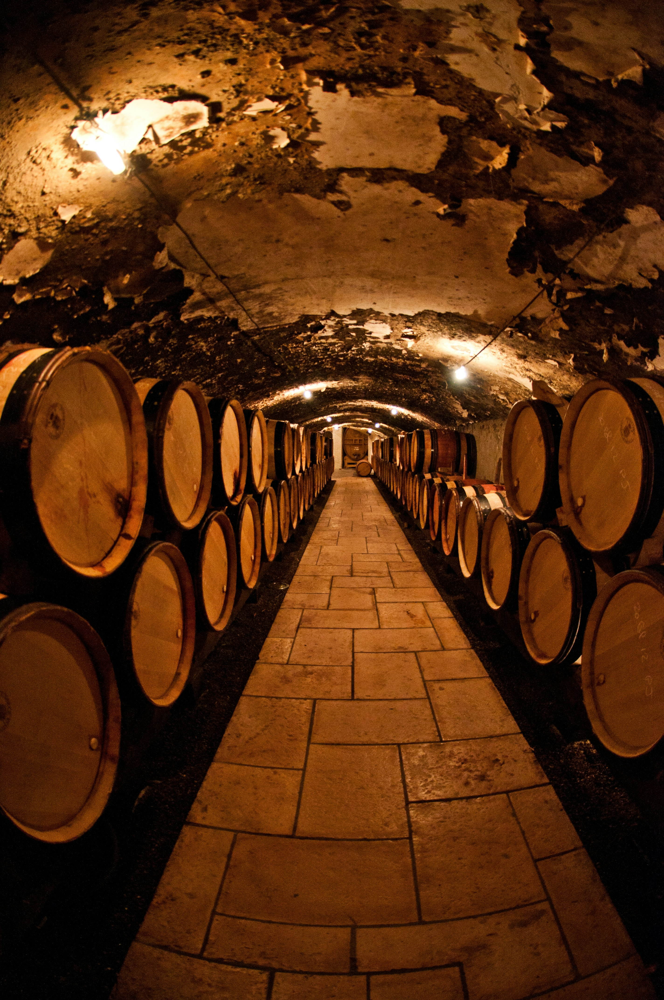
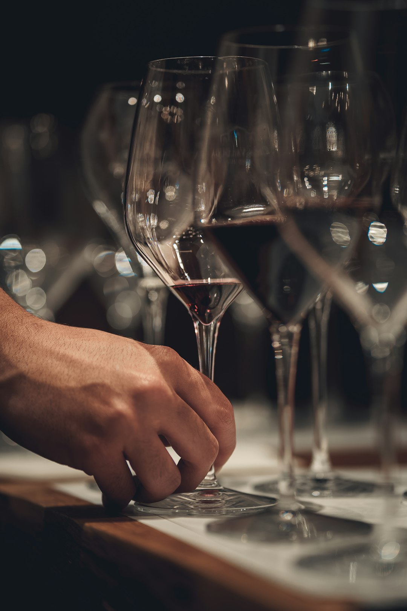

Vins DO Penedès
Paisatge vitivínicola, varietats i cultura del vi
La Denominació d'Origen Penedès és una de les més prestigioses de Catalunya, amb una tradició vinícola que es remunta a l'època romana. El territori, amb els seus turons suaus i el clima mediterrani, ofereix condicions ideals per al cultiu de la vinya.
El Penedès és famós per la producció de vins blancs a partir de varietats autòctones com la Xarel·lo, la Macabeu i la Parellada, però també compta amb excel·lents negres i rosats d'uves com el Cabernet Sauvignon, el Merlot i la Garnatxa Negra.
Descobrir el Penedès a través del vi és endinsar-se en un paisatge de vinyes, cellers i pobles amb història. Nombroses rutes enoturístiques permeten als visitants conèixer de primera mà el procés d'elaboració i tastar els millors vins de la comarca.
Galeria



Descobreix el Penedès en vídeo
Font: Vídeo del Penedès